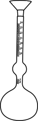
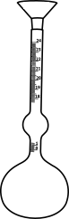

Specific gravity of cement
Objective
To determine the specific gravity of coarse aggregate using pycnometer.
Apparatus used:
Le-Chatelier flask, weighing scale, etc.
 


Weigh the clean and dry Le-Chatelier flask with its stopper.
Empty weight of flask with stopper (W1)= _____ gm
Remove the stopper and add weighed amount of cement, then weigh the flask with stopper.


Weight of flask + cement (W2)= _____gm
Add kerosene to the flask upto the graduated mark and shake it well to remove air bubbles.

Weight of flask + cement + kerosene (W3)=_____ gm
Add kerosene to Le-Chatelier’s flask upto graduated mark and weigh it.
Weight of flask + kerosene (W4) = _____ gm
Add water to Le-Chatelier’s flask upto graduated mark and weigh it.

Weight of flask+water (W5) = _____ gm
Repeat the same procedure for further trials.
Observation
Empty weight of flask with stopper (W1)= _____ gm
Weight of flask + cement (W2) = _____gm
Weight of flask + cement + kerosene (W3) = _____ gm
Weight of flask + kerosene (W4) = _____ gm
Weight of flask+water (W5) = _____ gm
Specific gravity of kerosene = _____
Specific gravity of cement = _____
Average Specific gravity of cement = _____
Trial =